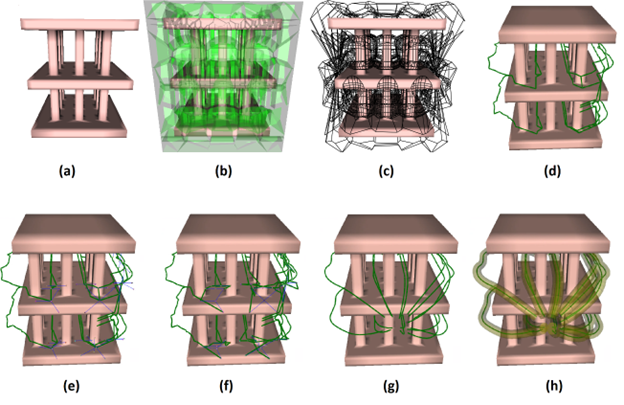

Spatially Distributed Lane Planning for Navigation in 3D Environments
Computer Animation and Virtual Worlds 2023
( Appeared at the proceedings of Computer Animation and Social Agents 2023 )
✱ University of California Merced
Abstract:
This paper introduces the problem of planning spatially distributed lanes for supporting multi-agent navigation applications in 3D environments. Our proposed approach computes the max-flow of a 3D medial axis representation of the environment in order to globally determine collision-free lanes exploring the entire free space of the volumetric scene. Our method addresses agent clearance and path dispersion in order to provide a comprehensive methodology to globally compute lanes for guiding multiple agents in a 3D environment.
By selecting the desired lane dispersion our approach offers an intuitive and powerful way to explore variations in the computed collections of lanes. Dispersion is addressed with a combination of new techniques based on max flow computation, clearance-based path separation, and adaptive shortcut-based smoothing.
Method overview:

This work addresses the new problem of planning spatially distributed lanes in 3D environments in order to
achieve conflict-free multi-agent spatial navigation. Given an input 3D environment (a) our method first computes an approximated 3D Voronoi
diagram with pruned vertices and edges (b) from which a medial graph representation is extracted (c). The max flow in the medial graph is then
computed in order to determine collision-free lanes taking into account agent clearance and path dispersion (d). Dispersion is addressed with a
combination of new techniques based on max flow computation, clearance-based path separation (e, f) and adaptive shortcut-based smoothing (g).
The obtained lanes are spatially distributed and guarantee clearance requirements (h).
Paper & supplemental materials: